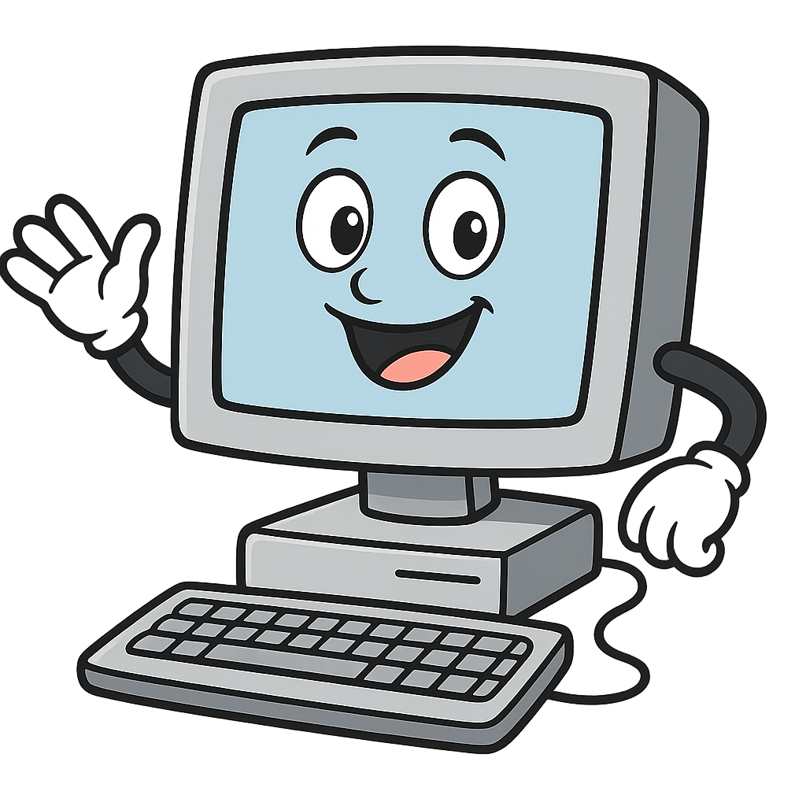

À chaque cours de SNT, il sera obligatoire d'amener :
Des écouteurs ou un casque (en branchement jack 3,5 mm uniquement, pas en bluetooth)
Ses codes de connexion
Un porte-vues et quelques feuilles de copies
SNT
Internet
Le Web
Réseaux sociaux
Géolocalisation
Données structurées et traitement
Photographie numérique
Informatique embarquée et objets connectés